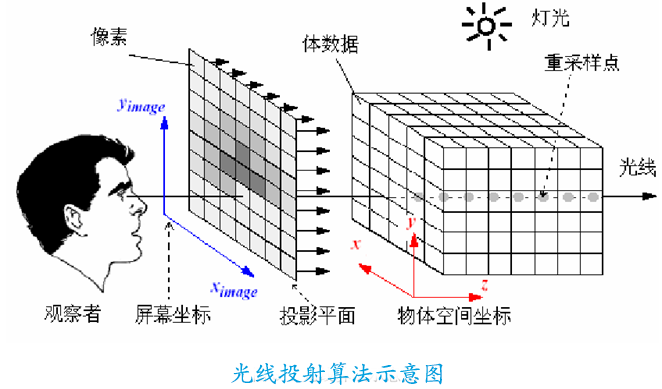

光线投射方法是基于图像序列的直接体绘制（Volume Rendering）算法。
从图像的每一个像素，沿固定方向（通常是视线方向）发射一条光线，光线穿越整个图像序列，
并在这个过程中，对图像序列进行采样获取颜色信息，同时依据光线吸收模型将颜色值进行累加，直至光线穿越整个图像序列，最后得到的颜色值就是渲染图像的颜色。
光线投射的基本步骤可以分为如下4步：
这个过程被不断重复。计算开始于视图中最远的样本点，并且结束于最近的一个。这个工作流水线会确保被遮挡的体部分不影响上述过程得到的结果像素。

var raycaster = new THREE.Raycaster();
var mouse = new THREE.Vector2();
function onMouseMove( event ) {
// calculate mouse position in normalized device coordinates
// (-1 to +1) for both components
mouse.x = ( event.clientX / window.innerWidth ) * 2 - 1;
mouse.y = - ( event.clientY / window.innerHeight ) * 2 + 1;
}
function render() {
// update the picking ray with the camera and mouse position
raycaster.setFromCamera( mouse, camera );
// calculate objects intersecting the picking ray
var intersects = raycaster.intersectObjects( scene.children );
for ( var i = 0; i < intersects.length; i++ ) {
intersects[ i ].object.material.color.set( 0xff0000 );
}
renderer.render( scene, camera );
}
window.addEventListener( 'mousemove', onMouseMove, false );
window.requestAnimationFrame(render);
[ { distance, point, face, faceIndex, indices, object }, ... ]
distance – 射线的起点到相交点的距离
point – 在世界坐标中的交叉点
face – 相交的面
faceIndex – 相交的面的索引
indices – 组成相交面的顶点索引
object – 相交的对象
当一个网孔(Mesh)对象和一个缓存几何模型(BufferGeometry)相交时，faceIndex 将是 undefined，并且 indices 将被设置； 而当一个网孔(Mesh)对象和一个几何模型(Geometry)相交时，indices 将是 undefined。
当计算这个对象是否和射线相交时，Raycaster 把传递的对象委托给 raycast 方法。 这允许 meshes 对于光线投射的响应可以不同于 lines 和 pointclouds。
*注意*，对于网格，面（faces）必须朝向射线原点，这样才能被检测到；通过背面的射线的交叉点将不被检测到。 为了光线投射一个对象的正反两面，你得设置 material 的 side 属性为 THREE.DoubleSide。